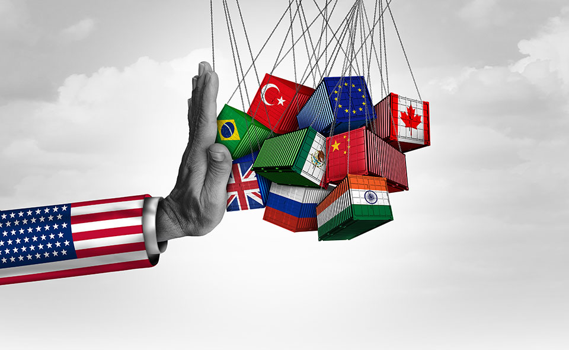
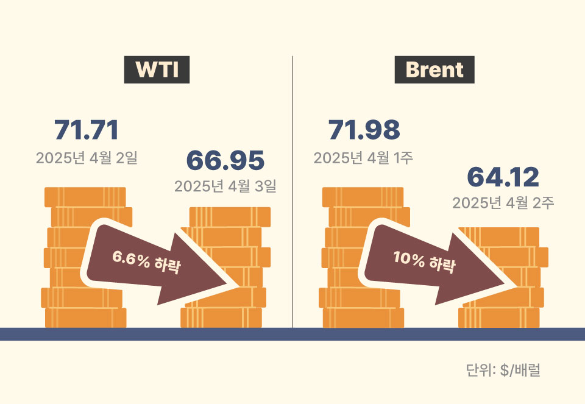
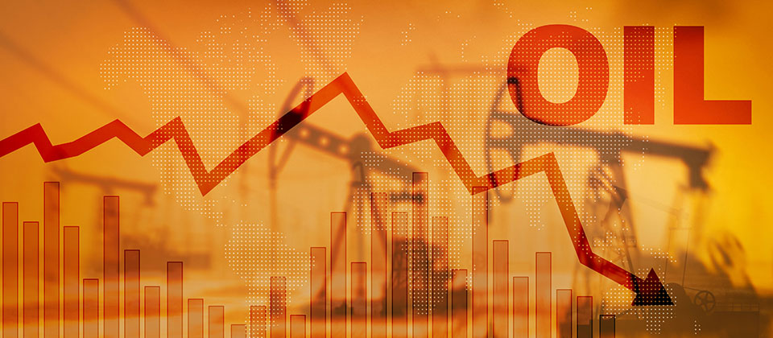
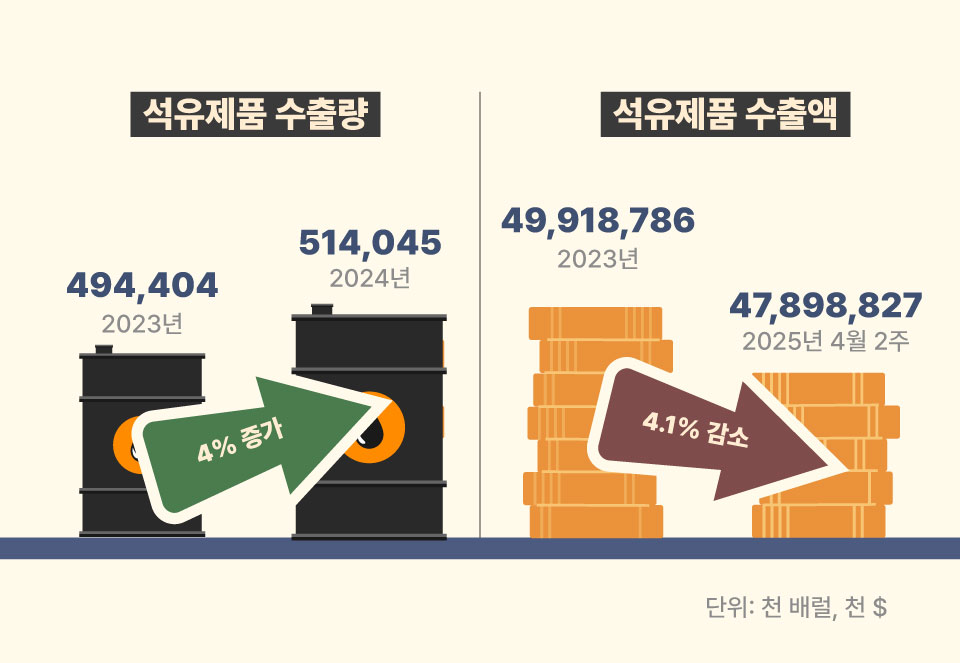

미국 트럼프 대통령의 재집권과 함께 미국발 전방위 무역 압박이 세계 경제의 핵으로 부상하고 있다. 트럼프 대통령은 2025년 4월 2일을 미국 “해방의 날(Liberation Day)”로 선언하며 자국 경제를 보호하기 위한 명분으로 전방위적인 관세부과 정책을 발표했고, 이로 인해 석유시장을 포함한 전 세계 실물경제는 불확실성이 크게 높아졌다. 세계 석유시장은 그 구조상 공급망이 복잡하고 유통 경로가 국가 간 밀접히 연결돼 있으며, 유가는 거의 모든 산업에 직간접적으로 영향을 준다는 점에서 관세라는 단일 변수만으로도 그 정책적 파급효과는 매우 광범위하다. 본 기고문은 트럼프 2기 관세정책으로 인한 국내외 석유시장의 영향을 살펴보고, 우리의 대응 방향을 모색한다.
관세정책의 파괴력: 상호관세로 촉발된 무역구조 전환
2025년 4월 2일, 트럼프 미국 대통령은 '행정명령(Executive order) 제14257호'를 통해 미국으로 수입되는 모든 물품에 10%의 일률적인 추가 보편관세를 부과하고 국가별로 최대 25%까지 차등 관세를 적용할 수 있도록 했다. 이는 기존 WTO 다자주의 질서를 정면으로 거스르는 조치로, 실질적으로는 무역 상대국에 트럼프의 정치적 입장을 강요하려는 의도로 해석되고 있다. 특히 미국과의 동맹국인 영국, 캐나다, 호주, 일본, 한국 등에도 예외 없이 관세를 부과했을 뿐 아니라, 미국의 가장 큰 교역 상대국인 중국과 멕시코에도 전방위적인 고율의 관세부과를 발표했다. 나아가 온라인 직구 면세 한도 폐지 등도 병행하며 사실상 미국 내 생산 유도와 수입 억제라는 일관된 기조를 보였다.

트럼프의 이번 관세정책에 대한 국가별 대응은 그들의 내부 정치경제적 역학관계에 따라 다르게 나타났다. 예컨대, 영국은 자동차와 농산물 관세를 조정하는 양자협상을 통해 갈등을 조기에 봉합하는 실리를 추구했고, 일본도 다자외교 무대를 활용해 보호무역주의에 대응하고 미국과의 전략적 관계를 유지하는 신중한 접근을 취했다. 반면 캐나다는 보복 관세와 대미 경제의존 탈피를 선언하며 강경 대응에 나섰고, 중국 역시 미국산 자동차, 반도체, 대두, 천연가스 등 핵심 수출 품목에 최대 125%의 보복 관세를 부과하며 정면으로 맞섰다.
글로벌 거시경제적 파급효과: 시장 충격에 따른 유가 하락의 연쇄 작용
미국발 관세정책에 대한 시장의 반응은 즉각적이었다.
서부텍사스유(WTI)는 관세 발표 다음 날 $66.95로 하루 만에 6.6%
급락하며 2022년 이후 가장 큰 일일 하락폭을 기록했다. 국제
금융기관들은 미국의 관세정책 불확실성에 따른 세계 경기 침체를
우려하며 일제히 경제 지표 전망치를 하향 조정했다. UBS는 올해
브랜트유 전망치를 종전보다 $12 낮춘 배럴당 $68로 수정했고,
골드만삭스는 올해 석유 수요 증가폭이 30만b/d에 그칠 것이라고
발표했으며, IMF는 관세정책이 세계 무역 증가율을 2025년 1.7%로
떨어뜨릴 수 있다고 경고했다. 이는 단순한 시장 반응을 넘어
관세정책이 석유 수요 전반을 위축시키는 구조적 변수로 작용하고
있음을 방증한다.
실물경제 위축에 따른 수요 둔화 우려와 함께, 공급 측면에서도 전례
없는 변동이 발생했다. 특히 OPEC+는 수요 위축이 예상되는 상황에서
오히려 하루 41만 배럴의 증산을 결정하여 시장을 충격에 빠뜨렸다.
이는 당초 증산 계획의 세 배에 달하는 수치로, 가격 하락 우려에도
불구하고 점유율을 선제적으로 확보하려는 전략으로 풀이된다.
브렌트유는 관세정책 발표 후 일주일 만에 $65까지 밀리며 월간 기준
10% 이상 하락하며 2021년 이후 최저 수준을 기록했다.

2025년 4월 2일 트럼프 정부 관세정책 발표 후 큰 하락폭을 기록한 유가한편, 미국 셰일 업계도 이번 관세정책의 직격탄을 맞고 있다. 셰일 시추에 사용되는 강관류에 25%, 장비류에 10%의 관세가 부과되며 손익분기점 상승이 우려되고 있다. 미국 Dallas 연준의 2025년 3월 설문조사에 따르면, 셰일업체들이 신규 유정을 통한 생산 확대에 필요한 WTI 가격은 평균 $60~71로, 현재의 $60대 초반 가격은 대부분의 업체에 부담을 준다. 실제로 2025년 4월 둘째 주 시추공 수는 8기 감소하여 583기로 집계되었으며, 이는 2023년 6월 이후 최대 감소폭이다. 감산의 빠른 반응성은 미국 셰일 산업의 특징이지만, 동시에 중소업체의 생존 리스크를 높이고 있다.
국내 석유산업 영향 : 직접 피해는 적지만, 간접 충격은 중대
이번 트럼프발 관세정책으로 인한 유가 하락은 원유를 전적으로 수입에
의존하는 우리 경제에 일정 부분 긍정적인 요인이기도 하다. 국내
2024년 원유 수입액 $852억 기준, 유가 10% 하락 시 약 85억 불의 수입
비용 절감이 가능하며, 이는 무역흑자($518억)의 16%에 달한다. 유가
하락에 따라 국내 석유제품 수출액은 다소 줄어들겠지만, 결과적으로
에너지 부문 무역수지 측면에서는 긍정적인 효과가 남을 수 있다.
또 다른 한편으로 다행스러운 점은, 미국의 이번 관세정책은 우리의
미국향 석유제품 수출에는 제한적인 영향을 준다는 것이다. 왜냐하면
미국의 관세 대상에서 원유 및 주요 석유제품이 제외되었기 때문이다.
즉, 우리의 주요 대미 석유제품 수출품인 항공유, 휘발유, 윤활유 등이
관세 면제 리스트에 포함되었다(2024년 기준 우리나라의 대미 석유제품
수출 비중은 9.5%로, 항공유는 그중 가장 큰 비중을 차지함).

그러나 간접적인 충격이 없는 것은 아니다. 우선, 불확실성에 따른 경제활동 둔화는 정유사 수익성에 복합적인 영향을 준다. 국제 유가 하락은 정유사의 원유 구매 단가를 낮춰 단기적으로 비용을 절감하는 효과가 있다. 그러나 동시에 정제마진 축소, 수출단가 하락, 재고평가 손실 등 세 가지 위험이 동시에 작용하고 있다. 실제로 2024년 석유제품 수출량은 5.14억 배럴로 4% 증가했지만, 수출액은 479억 달러로 4.1% 감소했다. 이는 단가 하락이 정유업계 수익성에 실질적인 타격을 주고 있음을 보여준다. 둘째, 내수 수요 위축 가능성도 커지고 있다. 아시아 국가 전반이 트럼프 행정부의 관세 압박으로 경기 둔화 가능성이 높아지며, 우리나라 역시 수출 중심 산업 구조의 특성상 그 여파에서 자유롭지 않다. 자동차, 전자, 화학 등 주요 수출업종의 둔화는 산업용 에너지 소비를 줄이고, 정유업계의 내수 판매 축소로 이어질 수 있다. 특히 항공유와 경유 수요는 운송·물류 산업과 밀접히 연결되어 있어 타격이 더 클 수 있다. 셋째, 미국 내 석유산업의 위축이 글로벌 정제물량에도 간접적으로 영향을 줄 수 있다. 셰일업계 감산이 본격화되고 미국 내 수출 가능 물량이 축소될 경우, 국내 미국산 원유 도입에 차질이 발생할 수 있다. 이러한 상황은 원유 수입선 다변화, 정제원유 구성 조정 등 다층적인 대응을 요구한다. 마지막으로, 캐나다의 공급망 구조의 변화 가능성도 감지된다. 트럼프에 강한 반감을 가지게 된 캐나다는 아시아로의 원유 수출 판로를 개척할 가능성이 있다. 캐나다산 원유는 중동산 대비 저렴해 가격 경쟁력이 있는 것으로 알려져, 우리가 이를 원유 수입선 다변화의 기회로 삼을 수 있으나, 이는 중동 중심의 정제설비와 장기계약 구조, 물류비 부담 등 해결해야 할 과제가 병존한다. 단순 가격 경쟁력만으로 결정할 수 없는 복합적 전환 전략이 요구된다. 불확실성은 산업의 안정적인 성장에 결코 도움이 되지 않는다.

수출량 증가에도 불구하고 정제마진 약세에 따라 수출액은 감소했다.기존 무역 질서의 변화 : 유연한 대응과 전략적 사고 필요
트럼프 2기 관세정책은 단기 충격을 넘어, 글로벌 석유산업 구조의 변화를 예고하고 있다. 우리는 단기적으로는 관세 면제를 통해 제한적 영향을 미치는 점은 다행스러우나, 유가 하락과 수요 둔화 등 간접 충격은 불가피하다. 따라서 관세 자체보다, 관세가 유발한 유가 하락과 수익성 저하에 대응하는 복원력 확보가 핵심이다.
트럼프 2기 관세정책은 단순한 보호무역주의를 넘어 다자주의와 자유무역이라는 전통적 세계질서의 균열을 본격화하고 있다. 석유산업은 이 변화의 최전선에 있는 산업이자, 공급망·유통·정치경제가 가장 민감하게 얽힌 반사경이다. 국내 석유산업이 무역구조 전환의 새로운 시대를 버텨낼 수 있을지는, 얼마나 유연하게 전략적 전환을 이뤄내는지에 달려 있다. 방어적인 대응으로는 부족하다. 통상 환경 변화에 대응한 수출입 전략 조정, 설비의 유연성 제고, 굳건한 석유 안보 체계 마련 등은 우리가 안고 있는 구조적인 과제이다. 이러한 과제들은 정부와 민간이 긴밀히 협력하며 함께 풀어나가야 할 영역으로, 이번 미국발 관세 충격이 그 방향을 설정하고 점진적 추진체계를 갖추는 계기가 되기를 바란다.